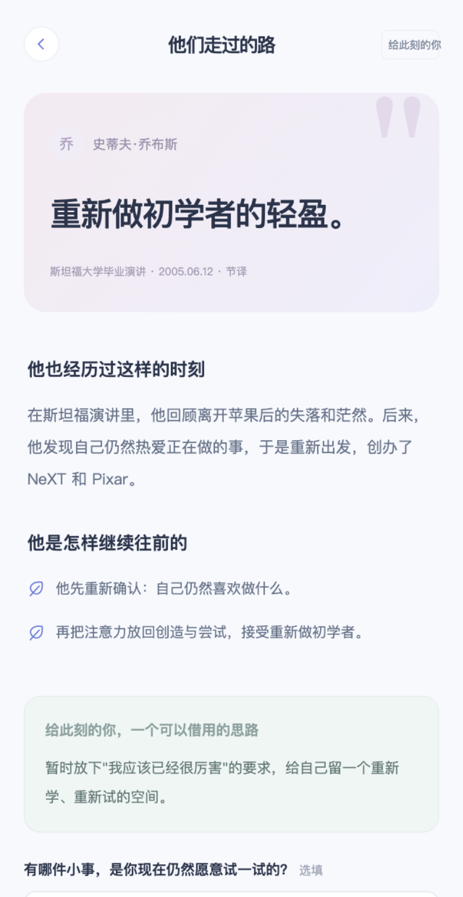
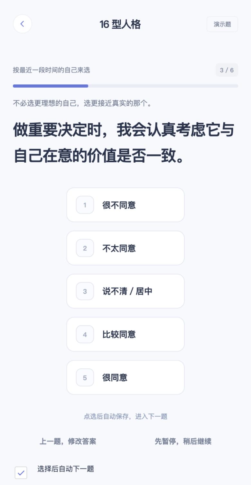
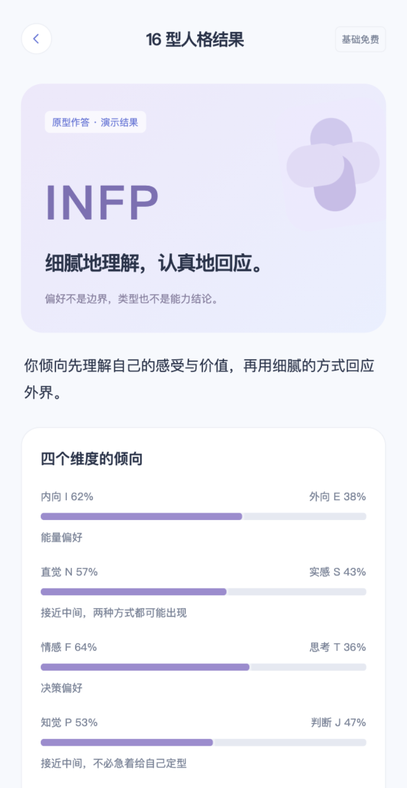
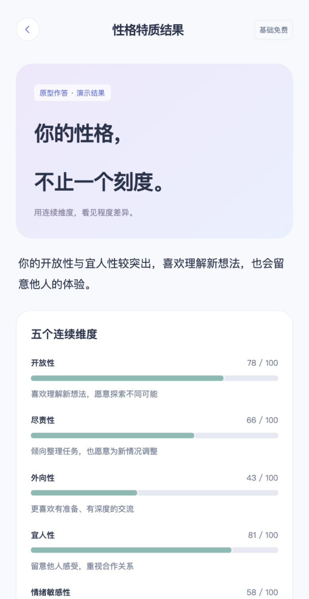
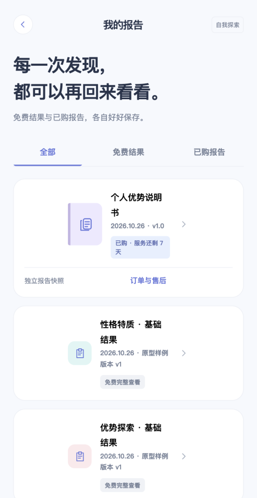
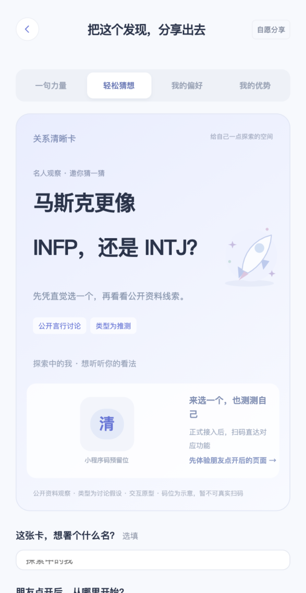

上图为微信开发者工具实际渲染截图，下图为与原型（396 宽归一）的左右拼接对比。点击"对照网页预览"打开对应原型屏。截图时间：2026-10-26（结构级逐屏核对通过后）。






逐屏结构核对：Playwright 无障碍树 vs 原生 WXML，26 屏全部一致；单测 34/34、渲染冒烟 35/35。剩余像素级差异主要来自系统导航栏与字体渲染（平台级），可在拼接对比图中人工复核。